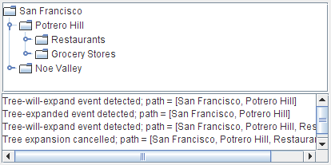

Lección: Escribiendo Listener Events
Sección: Implementando Listeners para los Eventos Comunmente Manejados
Cómo Escribir un Tree-Will-Expand Listener
El tree-will-expand listener previene que un nodo de un árbol se expanda o se colapse. Para ser notificado justo después de que ocurra una expansión o un colapso, debe usar un tree expansion listener en su lugar.
Esta demostración agrega un tree-will-expand listener al ejemplo TreeExpandEventDemo descrito en
Cómo Escribir un Tree Expansion Listener. El código agregado aquí
demustra que los tree-will-expand listeners previenen las expansiones y colapsos de un nodo: El
listener le preguntará por su confirmación cada vez que intente expandir un nodo.

Intente esto:
-
Pulse el botón Lanzar para ejecutar TreeExpandEventDemo2 usando
Java™ Web Start
(
descargue KDJ 7 o posterior
). Alternativamente, para compilar y ejecutar el ejemplo por sí mismo, consulte el
índice de ejemplos.

-
Pulse el gráfico a la izquierda del nodo Potrero Hill. Esto le dice al árbol que quiere expandir
el nodo.
Aparece un diálogo preguntándole si realmente quiere expandir el nodo. -
Pulse "Expand" o descarte el diálogo.
Los mensajes en el área de texto le indican que ha ocurrido un evento de árbol-se-expandirá y un evento de arbol-expandido. Al final de cada mensaje está la ruta al nodo expandido. -
Intente expandir otro nodo, pero esta vez presione el botón "Cancel Expansion" en el diálogo.
El nodo no se expande. Los mensajes en el área de texto le indican que ha ocurrido un evento de árbol-se-expandirá, y que usted ha cancelado una expansión en el árbol. -
Colapse el nodo Potrero Hill.
El nodo colapsa sin que aparezca un diálogo, porque el métodotreeWillCollapseque gestiona el evento permite que se produzca el colapso, sin oposición.
El siguiente trozo muestra el código que este programa agrega a TreeExpandEventDemo. La línea en
negrita previene que ocurra la expansión en el árbol. Puede encontrar el código fuente de la demostración en
TreeExpandEventDemo2.java.
public class TreeExpandEventDemo2 ... {
...
class DemoArea ... implements ... TreeWillExpandListener {
...
public DemoArea() {
...
tree.addTreeWillExpandListener(this);
...
}
...
//Required by TreeWillExpandListener interface.
public void treeWillExpand(TreeExpansionEvent e)
throws ExpandVetoException {
saySomething("Tree-will-expand event detected", e);
//...show a dialog...
if (/* user said to cancel the expansion */) {
//Cancel expansion.
saySomething("Tree expansion cancelled", e);
throw new ExpandVetoException(e);
}
}
//Required by TreeWillExpandListener interface.
public void treeWillCollapse(TreeExpansionEvent e) {
saySomething("Tree-will-collapse event detected", e);
}
...
}
}
La IPA de Tree-Will-Expand Listener
La Interfaz de TreeWillExpandListener
TreeWillExpandListener no tiene clase adaptadora.
| Método | Propósito |
|---|---|
| treeWillCollapse(TreeExpansionEvent) |
Llamado justo antes de que un nodo del árbol se colapse. Para prevenir que ocurra el colapso, su
implementación de este método debe lanzar un evento
ExpandVetoException.
|
| treeWillExpand(TreeExpansionEvent) |
Llamado justo antes de que un nodo del árbol se expanda. Para prevenir que ocurra la expansión, su
implementación de este método debe lanzar un evento
ExpandVetoException.
|
Vea La IPA de Tree Expansion Listener para información sobre el
argumento
TreeExpansionEvent para los métodos precedentes.
Ejemplo que Usan Tree-Will-Expand Listeners
TreeExpandEventDemo2, presentado en esta sección, es nuestro único ejemplo que usa un
tree-will-expand listener.